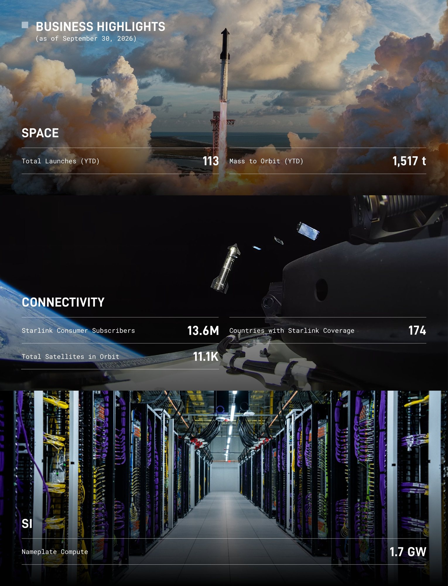
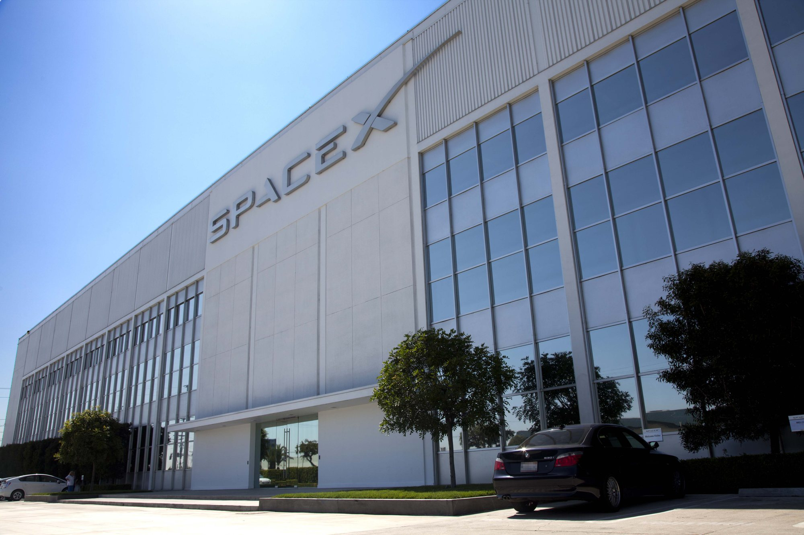

Nel rapporto trimestrale depositato alla SEC la settimana scorsa, SpaceX ha inserito una piccola tabella che dice moltissimo. Si chiama «concentrazione del rischio» e indica i clienti che pesano più del 10% del fatturato. Sono due, chiamati solo «Customer A» e «Customer B». Il secondo, nel trimestre chiuso il 30 settembre, vale da solo più di un terzo dell’azienda. Giovedì sera Bloomberg ha dato un nome a quella lettera: è Anthropic, la società di intelligenza artificiale guidata da Dario Amodei, la stessa che sviluppa i modelli Claude.
Che cosa dice il documento
La tabella è a pagina 13 del 10-Q, il rapporto trimestrale che ogni società quotata negli Stati Uniti deve depositare. Nel terzo trimestre 2026 il Cliente A vale il 16,6% dei ricavi consolidati, contro il 23,9% di un anno prima; il Cliente B vale il 34,5%. Nei primi nove mesi dell’anno i pesi sono 17,3% e 24,2%. Un anno fa il Cliente B non compariva nemmeno: era sotto la soglia del 10%. Il documento aggiunge due dettagli. I ricavi del Cliente A arrivano da tutti e tre i segmenti di SpaceX, cioè lanci, Starlink e intelligenza artificiale, il profilo tipico delle agenzie federali americane. Quelli del Cliente B arrivano solo dal segmento SI, Super Intelligence, la divisione nata dall’acquisizione di xAI. E al 30 settembre un singolo cliente rappresentava il 27,7% di tutti i crediti commerciali, cioè delle fatture emesse e non ancora incassate.
Su 14,6 miliardi di dollari di ricavi trimestrali, il 34,5% significa circa 5 miliardi in tre mesi, una media di 1,7 miliardi al mese. Per confronto, il segmento Space, quello dei Falcon, dei Dragon e di Starship, nello stesso trimestre ha fatturato 1,8 miliardi in tutto. Un solo cliente dell’intelligenza artificiale, in altre parole, paga a SpaceX quasi tre volte quello che l’azienda incassa da tutti i suoi lanci e da tutte le sue capsule.

Che cosa compra Anthropic
Anthropic non compra un servizio spaziale. Affitta capacità di calcolo nei data center di SpaceX a Memphis, nel Tennessee, i cluster chiamati Colossus e Colossus II, pieni di processori grafici NVIDIA, su cui addestrare e far funzionare i propri modelli. Il 10-Q descrive questi contratti di «cloud services» come un canone mensile fisso per avere a disposizione una quota riservata di calcolo, di solito per tre anni e con la possibilità per entrambe le parti di recedere con 90 giorni di preavviso. Nel trimestre i ricavi del segmento SI sono saliti a 7,6 miliardi, e la prima voce che spiega la crescita è proprio questa: contratti di cloud attivi per l’intero periodo, più nuovi contratti firmati nel trimestre.
Il rapporto non nasce ora. Nel prospetto per la quotazione di maggio SpaceX aveva già nominato Anthropic, scrivendo che il cliente si era impegnato a pagare 1,25 miliardi di dollari al mese fino a maggio 2029. Nella corrispondenza con la SEC l’azienda aveva spiegato perché non considerava quei contratti essenziali per il proprio business: se fossero disdetti, la capacità sarebbe «facilmente» riassegnata ad altri clienti, vista la scarsità di calcolo di frontiera, oppure usata per i progetti interni come l’addestramento di Grok.
Nei giorni scorsi è arrivata l’altra metà della storia, dal prospetto di quotazione di Anthropic. Tra maggio e ottobre 2026 la società ha firmato e ampliato diversi accordi con SpaceXAI, la controllata di SpaceX, per una spesa complessiva fino a 120,5 miliardi di dollari su contratti che arrivano al 2029. A regime, quando tutta la capacità sarà consegnata, cosa che Anthropic si aspetta a dicembre 2026, il conto salirà a circa 3,1 miliardi al mese. Le indiscrezioni precedenti parlavano di 84,5 miliardi: la cifra reale è più alta di circa 36 miliardi. Dopo periodi non cancellabili che scadono a gennaio e marzo 2027, ciascun accordo può essere disdetto da una delle due parti con 90 giorni di preavviso scritto.

Un primato e un rischio
Per vent’anni il primo cliente di SpaceX è stato lo Stato americano: la NASA con i rifornimenti e gli astronauti per la Stazione spaziale, il Pentagono con i satelliti militari. È la prima volta che un’azienda privata lo supera, e non è un’azienda spaziale. È anche il segnale più chiaro di quanto sia cambiata SpaceX dopo la fusione con xAI e la quotazione al Nasdaq: il segmento più grande non è più quello dei razzi né quello di Starlink.
Il rovescio è la dipendenza. Un terzo del fatturato legato a un solo cliente, con contratti che dall’inizio del 2027 si possono chiudere con tre mesi di preavviso, è il tipo di concentrazione che gli analisti guardano con attenzione. La difesa di SpaceX sta in due argomenti. Il primo è la domanda: il direttore finanziario Bret Johnsen, nella teleconferenza sui conti, ha detto che «ci sono molti clienti che chiedono calcolo» e che l’azienda si aspetta nuovi clienti e nuovi accordi, valutando di volta in volta l’uso più redditizio delle proprie macchine. Tra i clienti c’è già Google, che secondo la stampa americana paga circa 920 milioni di dollari al mese. Il secondo è la solidità: Musk sostiene che SpaceX, con Starlink e i lanci alle spalle, è più sicura delle società che vivono solo di affitto di data center, perché i mercati del debito, ha scritto su X, hanno «quasi del tutto chiuso» l’accesso al denaro per chi non ha ricavi importanti indipendenti dall’intelligenza artificiale.
Perché interessa anche a chi segue i razzi
La notizia arriva nello stesso giorno in cui Ars Technica ha pubblicato una lunga analisi di Eric Berger sull’allontanamento di SpaceX dai contratti pubblici: lo stop ai nuovi lanci commerciali su Falcon 9 dopo il 2028, la rinuncia a tre gare della Space Force, il rifiuto di offrire lanci verso la Luna ad alcune aziende del programma lunare della NASA, i dubbi sull’impegno nel lander di Artemis. Nel 10-Q c’è una frase che va nella stessa direzione: SpaceX destina «una quantità significativa» della propria capacità di lancio a Starlink e prevede di destinarne altrettanta, in futuro, al segmento SI, cioè ai satelliti per il calcolo in orbita.
Il Cliente B spiega il perché meglio di qualsiasi dichiarazione. Quando un contratto di calcolo vale in un trimestre quasi tre volte tutti i lanci, le priorità dell’azienda si spostano di conseguenza: gli ingegneri migliori, ha detto Musk nella stessa teleconferenza, vengono mandati a costruire data center a Memphis, con l’obiettivo di installare 10 gigawatt di calcolo a terra nel 2027. Per la NASA e per chi aspetta Starship sulla Luna è una domanda aperta; per SpaceX, almeno sui conti, la risposta è già scritta.
Che cosa aspettarsi adesso
Il prossimo passaggio è la quotazione di Anthropic, che renderà pubblici anche i suoi conti trimestrali e quindi, indirettamente, quelli del rapporto con SpaceX. Da dicembre, se la capacità sarà consegnata nei tempi previsti, il peso del Cliente B nei conti di SpaceX potrebbe crescere ancora. La data da segnare è l’inizio del 2027, quando scadranno i periodi vincolanti e il contratto diventerà, per entrambe le parti, un accordo da rinnovare di fatto ogni trimestre. Il dossier su Starlink Mobile a Urda e sul voto della FCC passa all’archivio Notizie.
Fonti pubbliche e tracce
Ultimo aggiornamento editoriale: 30 ottobre 2026, 9:40 ora italiana. Nel corpo non si ripete la fonte a ogni frase: le tracce sono raccolte qui. L’identificazione di Anthropic come «Cliente B» non è confermata dalle società.
- SpaceX, modulo 10-Q al 30 settembre 2026 (SEC): tabella di concentrazione dei clienti (Customer A 16,6%, Customer B 34,5%), crediti al 27,7%, descrizione dei contratti di cloud services, ricavi del segmento SI, frase sull’allocazione della capacità di lancio.
- SpaceX, comunicato sui risultati del terzo trimestre 2026 (SEC): ricavi del segmento SI a 7,6 miliardi.
- Bloomberg, Dina Bass, Carmen Arroyo e Loren Grush, 29 ottobre 2026: Anthropic è il «Customer B», secondo una persona a conoscenza della questione.
- The Next Web, 29 ottobre 2026: riepilogo, mancato commento delle società, citazione di Musk su X sui mercati del debito, contratto Google da circa 920 milioni al mese.
- TeslaNorth, 29 ottobre 2026: calcolo di circa 5 miliardi nel trimestre e 1,7 miliardi al mese.
- Gizmodo, ottobre 2026 e Yahoo Finance, ottobre 2026: prospetto di Anthropic (fino a 120,5 miliardi, 3,1 miliardi al mese da dicembre, recesso con 90 giorni), dichiarazione del CFO Bret Johnsen.
- SpaceX, risposta alla SEC sul prospetto di quotazione, 2026: contratti con Anthropic da 1,25 miliardi al mese su Colossus e Colossus II, ragioni per cui non sono depositati come contratti essenziali.
- Ars Technica, Eric Berger, 29 ottobre 2026: allontanamento di SpaceX dai contratti pubblici, dichiarazioni di Musk sui data center e sui 10 GW nel 2027.
- Andrew Curran su X, 29 ottobre 2026: rilancio della notizia, ripreso da Eric Berger.
Fotografie utilizzabili
La notizia è un dato di bilancio e non ha un evento fotografabile. Le immagini sono: Dario Amodei a TechCrunch Disrupt 2023 (foto d’archivio a licenza libera, CC BY 2.0), la grafica ufficiale SpaceX del terzo trimestre (credito SpaceX · uso editoriale non commerciale) e la sede di Hawthorne (foto d’archivio SpaceX, CC0). Dettagli in scheda dei crediti fotografici.
Apri il dossier Starlink Mobile a Urda archiviato · Il dossier sui conti del terzo trimestre · Archivio Notizie · Torna a SpaceX